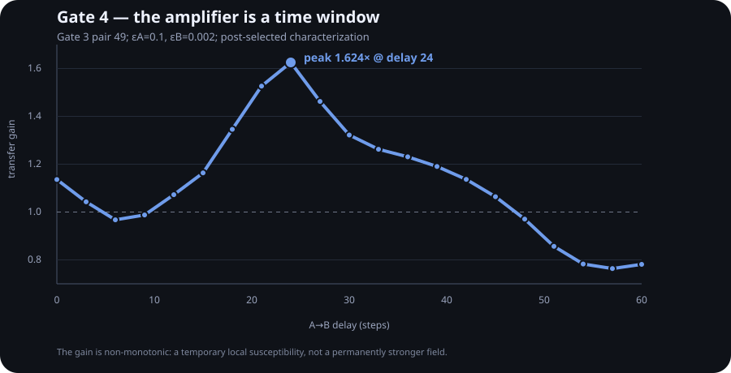
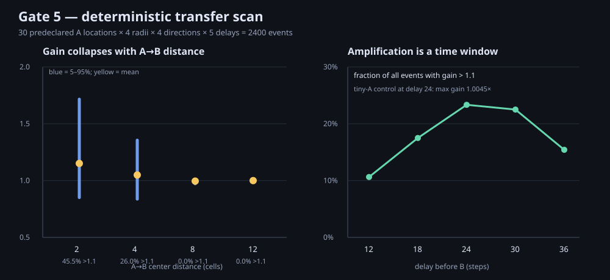
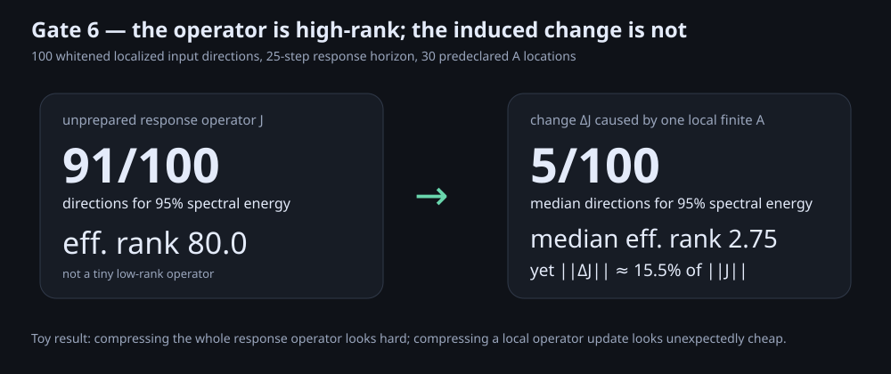
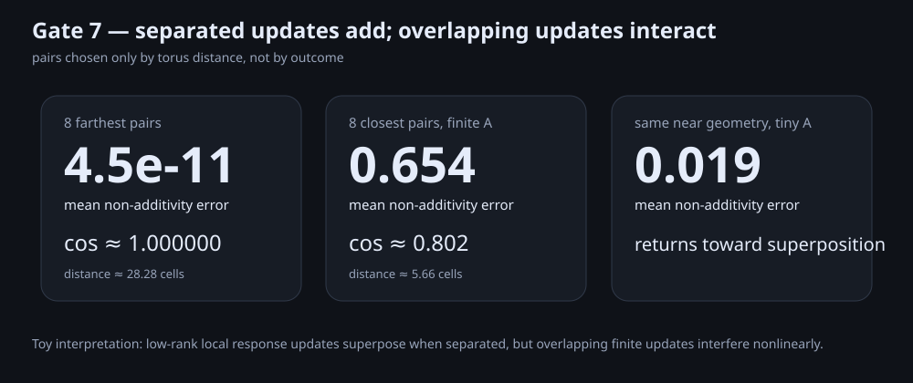

Compress the state.
Did you compress its future response?
Kompressori began with an old partial-field / “hologram?” experiment. The useful thing was not holography. It was the discovery that a state can preserve a recognizable future while losing the geometry that determines what the next perturbation will become.

Replay is not the operator
A can prepare the response to B
A finite packet A is applied, the field evolves, then a much smaller B probes the changed response geometry. Tiny A stays essentially linear; a selected finite-A nearby pair reaches 1.466× transfer gain.

The 1.466× pair was deliberately selected from 300 pairs. G3 is an existence example, not a prevalence estimate.
The effect is a window, not a global mode

A creates a temporary local susceptibility pocket: nearby B can be suppressed, amplified, then suppressed again as the window moves through time.
Remove the post-selection. The local effect survives.
Thirty deterministic A locations, four B distances, four directions, five delays: 2400 outcome-independent events.

This validates a common near-field nonlinear susceptibility in the toy field, while arguing against the more seductive travelling / long-range cascade story.
The whole operator is high-rank. Its local update is not.

The compressible object may be the operator update, not the whole operator.
Separated updates add. Overlapping updates interfere.

In this toy field, interference appears when low-rank local response-geometry updates overlap.
What the old PhiWorld question turned into
Next
Can a small learned basis predict ΔJ at unseen A locations?
Does low-rank subspace overlap predict interference better than Euclidean distance?
Make updates persistent: when do local memories remain independent versus collapse?